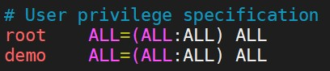
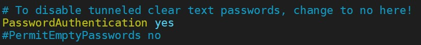

SSH Connect
SSH(Secure Shell) 是一種加密的網路傳輸協定，可在不安全的網路中為網路服務提供安全的傳輸環境。
SSH 通過在網路中建立安全隧道來實現 SSH客戶端與伺服器之間的連接。
SSH最常見的用途是遠端登入系統，人們通常利用SSH來傳輸命令行介面和遠端執行命令。
本節要說明除了 TWCC-VCS 預設使用金鑰登入的方式之外，
如何設定用傳統帳密的方式做登入。
--
Content:
金鑰檔方式
因為目前 SSH服務預設使用金鑰做登入，所以.pem/.ppk檔的登入方式，是沒問題的。
- .ppk 可以用 PuTTY.exe 做連線。
- .pem 可以用 MobaXterm/cmd 做連線。
連線時的port為22。
TWCC-VCS建立時，預設的使用者帳號隨選取的映象檔而有所不同。ubuntu系統為ubuntu / centos系統為centos / windows系統為administrator。
--
PuTTY 登入:
請先用 PuTTYgen 將.pem檔轉為.ppk檔。
將轉換好的.ppk檔案，放到 PuTTY.exe > Connection > SSH > Auth > Private key file for authentication。
並在 PuTTY.exe > Session > Host Name (or IP address)，填入想連線的IP。
設定好了之後，按下右下角的 Open，
輸入使用者帳號名稱(比如:ubuntu系統即為ubuntu)，即可進入。
MobaXterm 登入示意圖:

帳號密碼
但是有些人不習慣使用金鑰的方式做登入，那要怎麼把 SSH 的設定做修改呢?
首先要先建立帳號。
不建立新帳號的方法也有，但是比較複雜也麻煩。
二來不同的登入方式使用不同帳號做管理，在資安上也比較合理。
sudo su --切換到超級使用者。
adduser <new_username> --新增要用密碼登入的使用者名稱。
> 系統接下來就會指示你要輸入使用者名稱、密碼、fullname...等等。 <br>
> 使用者名稱、密碼最重要，其他直接按 Enter 就可以了(會使用預設的)。sudo vim /etc/sudoers --修改文件
> 找 「# User privilege specification」的區塊
> root ALL=(ALL:ALL) ALL <--原本就有的。
> <new_username> ALL=(ALL:ALL) ALL <--新增這一行。示意圖。

sudo vim /etc/ssh/sshd_config --修改 ssh 服務的設定。
> 將 PasswordAuthentication no 改為 yes。 <br>
> PasswordAuthentication yes示意圖。

service sshd restart --重啟sshd服務。--
設定完成後，就可以利用 cmd 做帳號密碼登入的連線了!!
ssh -V --確認有無 ssh 服務
ssh new_username@hostip
> 按照指示輸入密碼。也可利用 PuTTY.exe 連線。
putty.exe -ssh new_username@hostip -pw password
或是
start putty.exe -ssh new_username@hostip -pw password